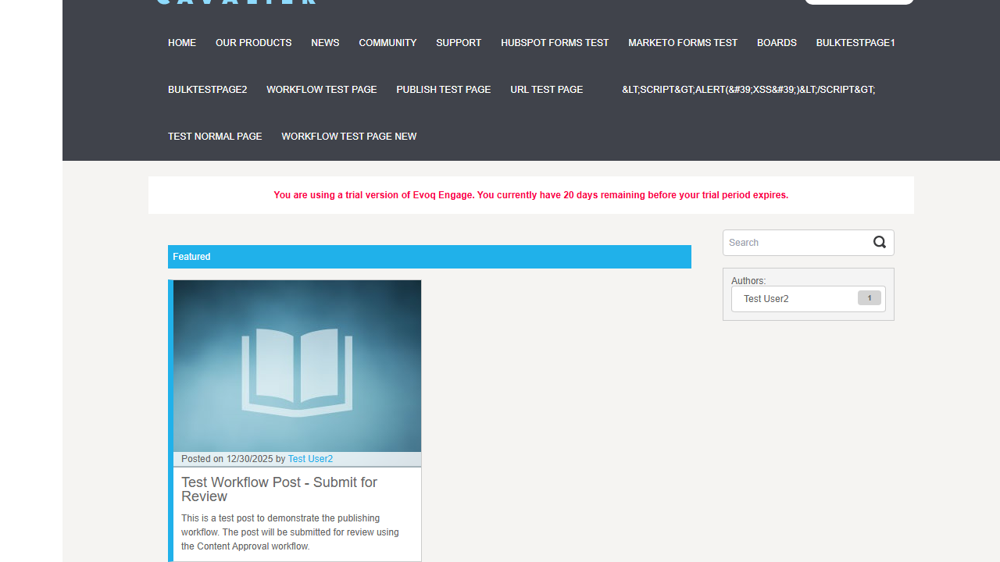
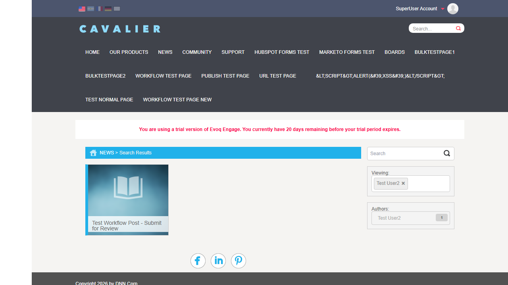
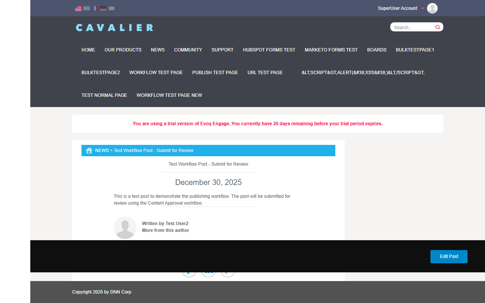
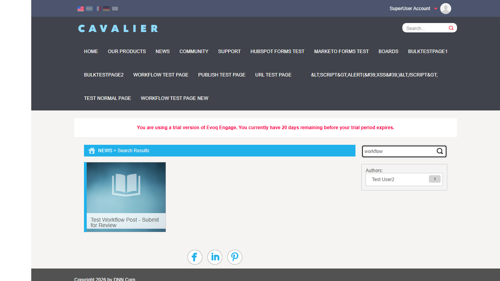
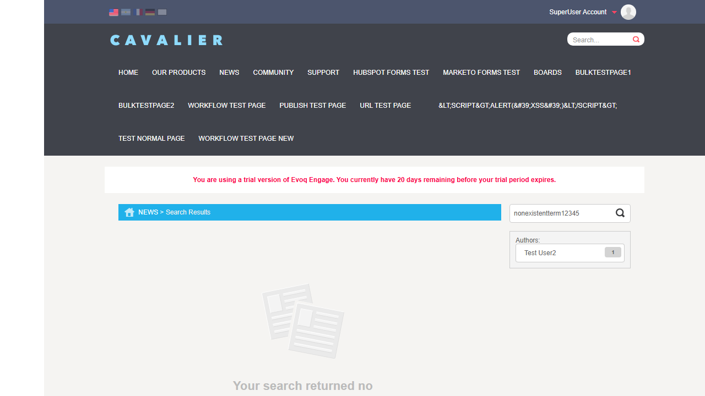
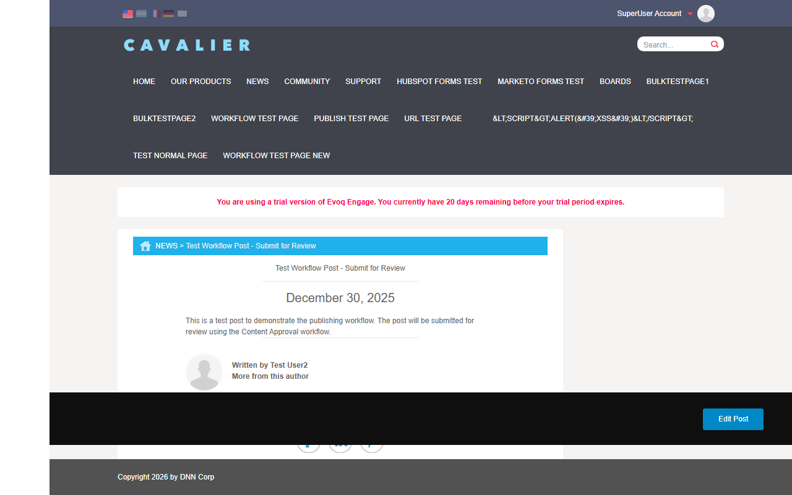
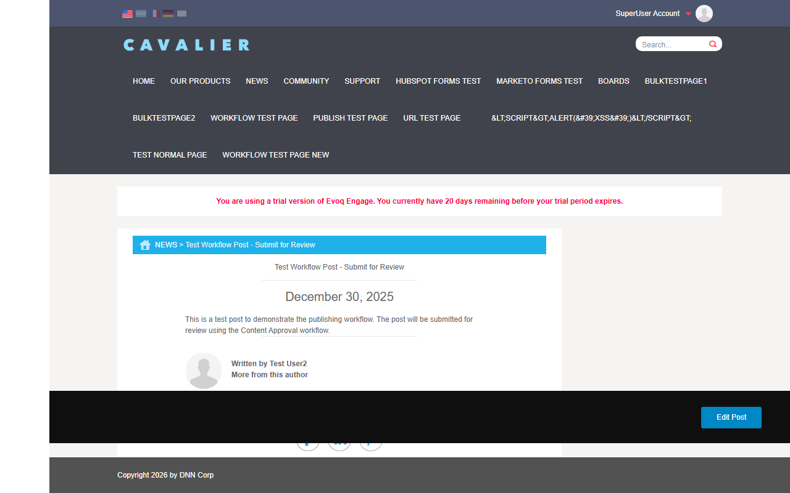

Post Display Views - Test Report
Feature Information
Feature Name Post Display Views Extension Publisher (Module) Priority Top Description Display posts in different view modes including list, detail, and card views UI Location Content > Publisher > View Relevant Files Views/View.ascx, Views/List.ascx, Views/Detail.ascx, ClientScripts/CardViewManager.js Test Date January 6, 2026 Tester Claude (Automated Testing)
Test Results Summary
Total Tests
Passed
Failed
Pass Rate
8
8
0
100%
Test Cases
Test 1: Display Posts in List/Featured View
Status: PASS
Description: Verify that posts are displayed in a list/featured view format with proper styling.
Steps Taken:
Navigated to News page (http://localhost:8081/en-us/News)
Verified the Featured section displays published posts
Confirmed post card shows image, title, summary, date, and author
Expected Result: Posts display in featured/list format with proper metadata.
Actual Result: Posts display correctly in Featured view with card styling showing all metadata elements.
Screenshot:

Test 2: Display Posts in Grid/Card View
Status: PASS
Description: Verify posts display in card format when filtered or in search results.
Steps Taken:
Applied author filter to view posts by specific author
Verified posts display in smaller card format
Confirmed card shows image, title, and basic metadata
Expected Result: Posts display as cards with consistent styling.
Actual Result: Posts display correctly in card view format with proper dimensions and styling.
Screenshot:

Test 3: View Single Post Detail
Status: PASS
Description: Verify that clicking on a post opens the full detail view with all content.
Steps Taken:
Clicked on post title "Test Workflow Post - Submit for Review"
Verified navigation to detail page URL
Confirmed all detail view elements are present (breadcrumbs, title, date, content, author section)
Expected Result: Detail view displays full post content with all metadata.
Actual Result: Detail view renders correctly with:
Breadcrumbs navigation (News > Post Title)
Post title as H1 heading
Publication date (December 30, 2025)
Full post body content
Author section with avatar and "More from this author" link
Social sharing links (Facebook, LinkedIn, Pinterest)
Edit Post button for authenticated users
Screenshot:

Test 4: Verify Post Metadata Display
Status: PASS
Description: Verify all post metadata elements are displayed correctly.
Steps Taken:
Examined list view for metadata display
Examined detail view for complete metadata
Verified date format, author name, and post summary
Expected Result: Metadata displays in proper format with correct information.
Actual Result: All metadata displays correctly:
Date: "Posted on 12/30/2025" (list) / "December 30, 2025" (detail)
Author: "Test User2" with link to author's posts
Title: Displayed as clickable heading
Summary: Truncated in list view, full in detail view
Screenshot: See Test 1 and Test 3 screenshots
Test 5: Test Author Filter Functionality
Status: PASS
Description: Verify filtering posts by author works correctly.
Steps Taken:
From detail view, clicked "More from this author" link
Verified URL updated to include author parameter (?author=7)
Confirmed filtered results show only posts by selected author
Verified "Viewing:" chip shows selected author with remove option
Expected Result: Only posts by selected author are displayed.
Actual Result: Author filter works correctly:
URL shows ?author=7 parameter
Breadcrumbs show "Search Results"
"Viewing: Test User2" chip displayed with X to remove filter
Only matching posts displayed
Screenshot:
Test 6: Test Search Functionality
Status: PASS
Description: Verify the Publisher search box filters posts correctly.
Steps Taken:
Entered "workflow" in the Publisher search box
Pressed Enter to submit search
Verified URL updated to include text parameter (?text=workflow)
Confirmed matching posts are displayed
Expected Result: Posts matching search term are displayed.
Actual Result: Search works correctly:
URL shows ?text=workflow parameter
Search box retains search term
Matching post "Test Workflow Post - Submit for Review" displayed
Breadcrumbs show "Search Results"
Screenshot:

Test 7: Test Empty Search Results State
Status: PASS
Description: Verify proper message displays when search returns no results.
Steps Taken:
Navigated to News page with non-matching search term
URL: ?text=nonexistentterm12345
Verified empty state message is displayed
Expected Result: Appropriate "no results" message displays.
Actual Result: Empty state displays correctly:
Empty state illustration (document icon) shown
"Your search returned no results" message displayed
Search box shows the search term
Authors filter still visible for alternative filtering
Screenshot:

Test 8: Verify SEO Metadata Rendering
Status: PASS
Description: Verify page titles are SEO-friendly on detail pages.
Steps Taken:
Navigated to post detail page
Verified browser tab shows post title
Confirmed page title matches post title for SEO
Expected Result: Page title reflects post title for SEO purposes.
Actual Result: SEO metadata renders correctly:
Detail page title: "Test Workflow Post - Submit for Review"
List page title: "My Website > News (Trial)"
Post title used as H1 heading in detail view
SEO-friendly URL structure: /News/Test-Workflow-Post-Submit-for-Review
Screenshot: See Test 3 screenshots (page title visible in browser)
Observations
Additional Notes
Pagination (Load More): The "Load More" button functionality could not be fully tested as there is only one published post in the system. The code review confirms the feature exists (List.ascx line 71-74) and uses CardViewManager.js for loading additional posts via AJAX.Infinite Scroll: The code suggests touch-based scrolling events for mobile (CardViewManager.js lines 189-200), but traditional infinite scroll is not implemented - pagination uses "Load More" button instead.View Mode Switching: The Publisher module uses a single card-based view mode. There are no explicit toggles between list/grid views in the UI - the view is determined by context (Featured view vs Search Results view).Responsive Design: The code includes touch event handlers for mobile devices (touchstart, touchend, touchmove events in CardViewManager.js), indicating responsive design support.Comments Integration: The Detail view supports Disqus comments integration (Detail.ascx lines 76-106), but this requires Disqus connector configuration.Social Sharing: Social sharing links (Facebook, LinkedIn, Pinterest) are present in both list and detail views.
Test Environment
Website URL http://localhost:8081 User Account host (SuperUser) Browser Chromium (Playwright) Viewport Size 1280x720 Extension Repository Dnn.Evoq.Content
Generated by Claude Code - Automated Testing
Report Date: January 6, 2026
 
